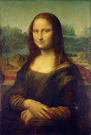

Despite the thousands of pages Leonardo left in notebooks and manuscripts, he scarcely made reference to his personal life. Within Leonardo's lifetime, his extraordinary powers of invention, his "great physical beauty" and "infinite grace," as described by Vasari, as well as all other aspects of his life, attracted the curiosity of others. One such aspect was his love for animals, likely including vegetarianism and according to Vasari, a habit of purchasing caged birds and releasing them. Leonardo had many friends who are now notable either in their fields or for their historical significance, including mathematician Luca Pacioli, with whom he collaborated on the book Divina proportione in the 1490s. Leonardo appears to have had no close relationships with women except for his friendship with Cecilia Gallerani and the two Este sisters, Beatrice and Isabella. While on a journey that took him through Mantua, he drew a portrait of Isabella that appears to have been used to create a painted portrait, now lost. Beyond friendship, Leonardo kept his private life secret. His sexuality has been the subject of satire, analysis, and speculation. This trend began in the mid-16th century and was revived in the 19th and 20th centuries, most notably by Sigmund Freud in his Leonardo da Vinci, A Memory of His Childhood. Leonardo's most intimate relationships were perhaps with his pupils Salaì and Melzi. Melzi, writing to inform Leonardo's brothers of his death, described Leonardo's feelings for his pupils as both loving and passionate. It has been claimed since the 16th century that these relationships were of a sexual or erotic nature. Walter Isaacson in his biography of Leonardo makes explicit his opinion that the relations with Salaì were intimate and homosexual. Earlier in Leonardo's life, court records of 1476, when he was aged twenty-four, show that Leonardo and three other young men were charged with sodomy in an incident involving a known male prostitute. The charges were dismissed for lack of evidence, and there is speculation that since one of the accused, Lionardo de Tornabuoni, was related to Lorenzo de' Medici, the family exerted its influence to secure the dismissal.[104] Since that date much has been written about his presumed homosexuality and its role in his art, particularly in the androgyny and eroticism manifested in Saint John the Baptist and Bacchus and more explicitly in a number of erotic drawings.
Despite the recent awareness and admiration of Leonardo as a scientist and inventor, for the better part of four hundred years his fame rested on his achievements as a painter. A handful of works that are either authenticated or attributed to him have been regarded as among the great masterpieces. These paintings are famous for a variety of qualities that have been much imitated by students and discussed at great length by connoisseurs and critics. By the 1490s Leonardo had already been described as a "Divine" painter. Among the qualities that make Leonardo's work unique are his innovative techniques for laying on the paint; his detailed knowledge of anatomy, light, botany and geology; his interest in physiognomy and the way humans register emotion in expression and gesture; his innovative use of the human form in figurative composition; and his use of subtle gradation of tone. All these qualities come together in his most famous painted works, the Mona Lisa, the Last Supper, and the Virgin of the Rocks.
Leonardo's approach to science was observational: he tried to understand a phenomenon by describing and depicting it in utmost detail and did not emphasise experiments or theoretical explanation. Since he lacked formal education in Latin and mathematics, contemporary scholars mostly ignored Leonardo the scientist, although he did teach himself Latin. His keen observations in many areas were noted, such as when he wrote "Il sole non si move." ("The Sun does not move.") In the 1490s he studied mathematics under Luca Pacioli and prepared a series of drawings of regular solids in a skeletal form to be engraved as plates for Pacioli's book Divina proportione, published in 1509. While living in Milan, he studied light from the summit of Monte Rosa. Scientific writings in his notebook on fossils have been considered as influential on early palaeontology. The content of his journals suggest that he was planning a series of treatises on a variety of subjects. A coherent treatise on anatomy is said to have been observed during a visit by Cardinal Louis d'Aragon's secretary in 1517. Aspects of his work on the studies of anatomy, light and the landscape were assembled for publication by Melzi and eventually published as A Treatise on Painting in France and Italy in 1651 and Germany in 1724, with engravings based upon drawings by the Classical painter Nicolas Poussin. According to Arasse, the treatise, which in France went into 62 editions in fifty years, caused Leonardo to be seen as "the precursor of French academic thought on art." While Leonardo's experimentation followed scientific methods, a recent and exhaustive analysis of Leonardo as a scientist by Fritjof Capra argues that Leonardo was a fundamentally different kind of scientist from Galileo, Newton and other scientists who followed him in that, as a "Renaissance Man", his theorising and hypothesising integrated the arts and particularly painting.